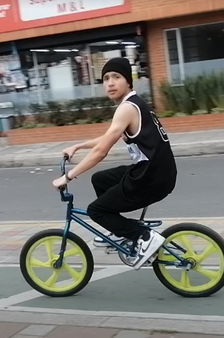
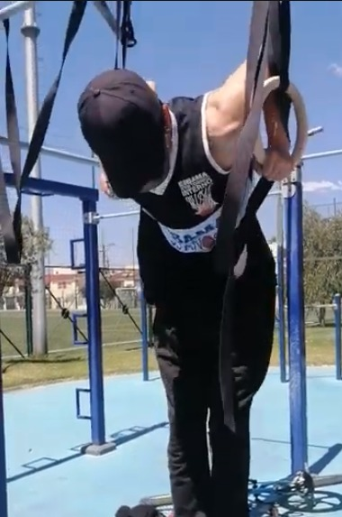
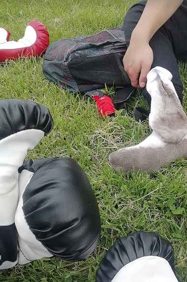
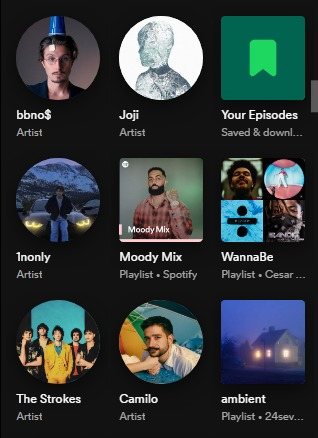
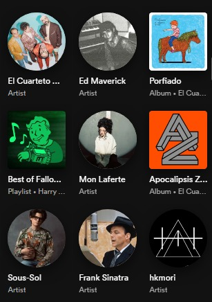
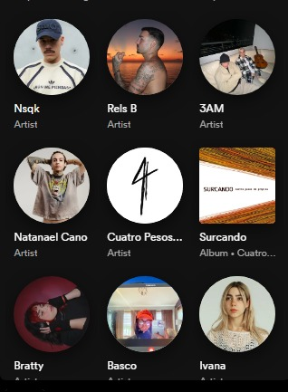
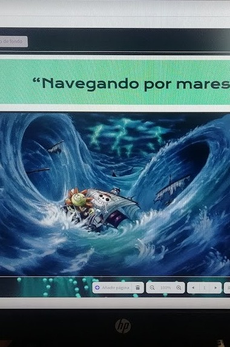
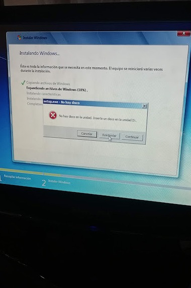
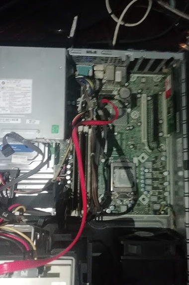

Deportes
  Me gusta practicar deportes, especialmente calistenia. Desde muy pequeño me interesé en mantenerme activo y saludable.
Música
  Soy un melómano, me encanta escuchar música. Mis géneros favoritos son el rock, el pop y la música urbana en inglés y español.
Tecnología
  Desde muy pequeño me interesó la tecnología. Me encanta estar al día con los últimos avances y aprender nuevas habilidades en este campo.